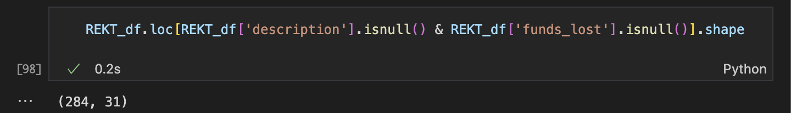
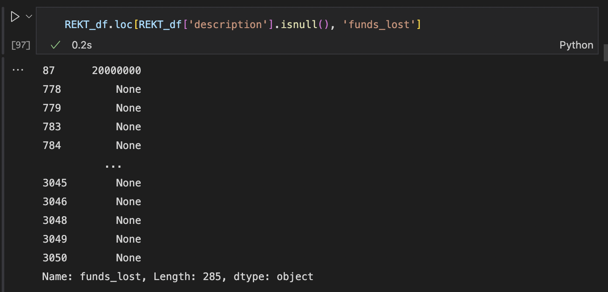

| id | project_name | description | name_categories | token_name | proof_archive_link | technical_issue | token_address | logo_link | date | proof_link | website_link | webarchive_link | twitter_link | telegram_link | our_post_link | funds_lost | funds_returned | active | git_hub | git_hub_contract_link | discord | bug_bounty_program_link | bug_bounty_program_company | audit_code_conf | is_verified_source_code | is_public_team | scam_type | network | scamNetworks | auditedBy | |
|---|---|---|---|---|---|---|---|---|---|---|---|---|---|---|---|---|---|---|---|---|---|---|---|---|---|---|---|---|---|---|---|
| 0 | 3058 | Terra Classic | <p><strong>Quick Summary</strong></p><p>A complex mixture of events and market dynamics cost the implosion of the $40b Terra (Classic) Network. </p><p><br></p><p><strong>Details of the Exploit</strong></p><p>The Terra Luna Network was focused on its two native coins $LUNC and $USTC. $USTC was the algorithmic Stablecoin that was supposed to hold the peg to 1$ and $LUNC functioned as the satellite asset that absorbed $USTC’s volatility. This was achieved through a mint and burn functionality as well as by arbitrage which the former function inherently enabled.</p><p><br></p><p>$USTC rose to prominence in rapid fashion even surpassing $DAI in market cap. The Luna Foundation Group decided to start a new Curve4pool with $FRAX, $USTC, $USDC and $USDT as assets, excluding $DAI in an attempt to starve the most used StableCoin pool used by institutions the Curve3pool on the Ethereum network.</p><p><br></p><p>The migration of $USTC from the Curve3pool is the event that started the bankrun. In early May, the Luna Foundation Guard withdrew 250 million $USTC from the Curve3pool in preparation for the Curve4pool. Simultaneously, a handful of whales withdrew sizeable amounts from the anchor protocol, a crypto savings bank. The biggest wallet withdrew 347 million $USTC in total and bridged funds to the Curve3pool in order to swap for other assets. This movement of funds created an imbalance between $USTC and other Stablecoins in the pool, resulting in devaluation of $USTC on exchanges.</p><p><br></p><p>As a result of the tokenomics of $USTC and $LUNC the firesale of $USTC resulted in uncontrollable minting of the $LUNC token and a rapid fall in valuation. Additionally, the Terra network went down due to overload in transaction as market participants were panicking and trying to answer margin calls within the Anchor protocol. Eventually massive liquidations of collateral in the Anchor protocol would be incurred by investors.</p><p><br></p><p><strong>Block Data Reference</strong></p><p>Whale Addresses:</p><p>https://etherscan.io/address/0x8d47f08ebc5554504742f547eb721a43d4947d0a</p><p>https://etherscan.io/address/0x4b5e60cb1cd6c5e67af5e6cf63229d1614bb781c</p><p>https://etherscan.io/address/0x1df8ea15bb725e110118f031e8e71b91abaa2a06</p><p>https://etherscan.io/address/0xeb5425e650b04e49e5e8b62fbf1c3f60df01f232</p><p>https://etherscan.io/address/0x41339d9825963515e5705df8d3b0ea98105ebb1c</p><p>https://etherscan.io/address/0x68963dc7c28a36fcacb0b39ac2d807b0329b9c69</p><p>https://etherscan.io/address/0x9f705ff1da72ed334f0e80f90aae5644f5cd7784</p> | Stablecoin | LUNC, USTC | https://twitter.com/OnChainWizard/status/1524123935570382851, https://rekt.news/ru/luna-rekt/, https://mobile.twitter.com/hasufl/status/1523817151471230976 | None | 0x7e43d25EaD96B1058f671F6690ea705BA2C7e5B9, 0xa47c8bf37f92abed4a126bda807a7b7498661acd | safe/files/scamDatabase/logo/62b31ccc0d07e.jpeg | 2022-5-8 | https://www.nansen.ai/research/on-chain-forensics-demystifying-terrausd-de-peg?utm_source=twitter&utm_medium=organic&utm_campaign=Research_USTdepeg_27May22, https://www.cnet.com/personal-finance/crypto/luna-crypto-crash-how-ust-broke-and-whats-next-for-terra/, https://www.fool.com/the-ascent/cryptocurrency/articles/binance-ceo-says-luna-collapse-left-him-poor-again/#:~:text=Key%20points,and%20make%20a%20new%20plan., https://medium.com/coinmonks/whats-happening-with-the-terra-luna-seed-money-exit | https://www.terra.money/ | None | https://twitter.com/terra_money | https://t.me/TerraNetworkLobby | None | 40000000000 | None | 1 | https://github.com/terra-money/ | None | https://twitter.com/terra_money | None | None | 0.0 | 0.0 | 1.0 | {'type': 'Bank Run'} | {} | [{'networks_id': 1003, 'scam_database_id': 3058, 'networks': {'id': 1003, 'name': 'Terra Classic', 'icon_link': 'safe/files/network/terra-classic.png'}}] | [{'audit_link': 'safe/files/audit/pdf/CertiK_Audit_for_Terra_v18.pdf', 'date': '2020-09-03T00:00:00.000Z', 'partner': {'id': 8, 'name': 'Certik', 'logo_link': 'safe/files/partner/logo/609520cbb1bba.png'}}] |
| 1 | 2762 | Africrypt | <p><strong>Quick Summary</strong></p><p>Ameer and Raees Cajee, the exchange's founders, were reported missing in June 2021 after alleging that almost $3.6 billion invested in the protocol was stolen in a "hack".</p><p><br></p><p><br></p><p><strong>Details of the Exploit</strong></p><p>Africrypt claimed to connect banks, payment providers and digital asset providers for seamless global money transfers.</p><p><br></p><p>In April 2021, the Africrypt case gained traction. At the time, one of the protocol's founders contacted investors to notify them that the protocol had been compromised. The creator asked that investors refrain from contacting attorneys or law authorities since doing so would "slow the recovery process."</p><p><br></p><p>However, Africrypt staff lost access to the exchange's back-end systems seven days before the claimed attack, making this report suspect. After receiving notice of the "hack" and its odd request not to contact attorneys or law enforcement, several investors hired a law firm Hanekom Attorneys. The investigation discovered that most of the bitcoin invested with the exchange had been withdrawn and moved through tumblers and mixers to make it harder to track. </p><p><br></p><p><br></p><p>The founders of Africrypt are still at large and have not been found as the time of this writing.</p> | CeFi | None | None | None | None | safe/files/scamDatabase/logo/61e049352a11a.png | 2021-6-23 | https://finance.yahoo.com/news/africrypt-bitcoin-disappearance-174636634.html, https://www.bloomberg.com/news/articles/2021-06-23/s-african-brothers-vanish-and-so-does-3-6-billion-in-bitcoin | https://africrypt.io/ | https://web.archive.org/web/20200921145240/https://africrypt.io/ | None | None | None | 3600000000 | None | 1 | None | None | None | None | None | NaN | 0.0 | 1.0 | {'type': 'Exit Scam'} | {} | [{'networks_id': 1666600003, 'scam_database_id': 2762, 'networks': {'id': 1666600003, 'name': 'CEX', 'icon_link': 'safe/files/network/cex.png'}}] | [] |
| 2 | 2878 | PlusToken | <p><strong>Quick Summary</strong></p><p>The perpetrators of one of the largest digital currency frauds have been sentenced to up to 11 years in prison. In addition, the PlusToken operators were penalized up to $900,000 by a Chinese court for their participation in the $2.25 billion Ponzi scam.<br><strong><br>Details of the Exploit</strong><br>Chen Bo established PlusToken in early 2018, posing as a South Korean wallet and exchange. It enticed investors by promising speedy and guaranteed returns. In the two years afterwards, Bo has recruited numerous others and spread the fraud to other Southeast Asian nations such as China, Cambodia, Malaysia, Vanuatu, and Vietnam.<br><br>PlusToken operators had devised a pyramid scheme that managed to lure over 2.6 million investors, authorities said. The scam was organized into at least 3,200 investor levels, with more referrals and bigger investments bumping an investor up the chain. The operators also lied to investors that they were making money through digital currency investing, according to investors.</p> | CeFi | None | None | None | None | safe/files/scamDatabase/logo/62432b9d39213.png | 2019-12-16 | https://cointelegraph.com/news/vanuatu-extradicts-six-chinese-citizens-allegedly-involved-in-crypto-scheme, https://www.nasdaq.com/articles/ringleaders-of-plustoken-scam-jailed-for-up-to-11-years-2020-12-01, https://coingeek.com/plustoken-scam-top-operators-jailed-for-up-to-11-years/ | https://thecryptonizer.team-plt.com/ | https://web.archive.org/web/20220125033211/https://www.coindesk.com/policy/2020/12/01/ringleaders-of-plustoken-scam-jailed-for-up-to-11-years/ | None | None | None | 2900000000 | None | 1 | None | None | None | None | None | NaN | 0.0 | 0.0 | {'type': 'Exit Scam'} | {} | [{'networks_id': 1666600003, 'scam_database_id': 2878, 'networks': {'id': 1666600003, 'name': 'CEX', 'icon_link': 'safe/files/network/cex.png'}}] | [] |
| 3 | 2861 | Thodex | <p><strong>Quick Summary</strong></p><p>Thodex a turkish crypto exchange went down with other $2 billion of user funds entangled in massive fraud and mismanagement.<strong><br></strong></p><p><br></p><p><strong>Details of the Exploit</strong></p><p>According to a translated statement on the website, Thodex, a crypto exchange that is located in Turkey, stated its platform has been "temporarily stopped" to handle an "abnormal fluctuation in the company accounts."<br><br>According to local media, Thodex's founder, Faruk Fatih Özer, has gone to Albania with $2 billion of investors' funds. The Demiroren News Agency published a photo of Ozer departing Istanbul Airport:<br>https://www.dha.com.tr/gundem/thodexin-kurucusu-faruk-fatih-ozerin-havalimanindan-ayrilirken-fotografi-1822744</p><p>The CEO has since declared that he has been close to committing suicide but decided against it. According to his own words, Faruk Fatih Özer, plans to repay all investors before handing himself in to authorities.</p> | CeFi | None | None | None | None | safe/files/scamDatabase/logo/6241c6cb5dadc.jpeg | 2021-4-22 | https://www.cnbc.com/2021/04/23/bitcoin-btc-ceo-of-turkish-cryptocurrency-exchange-thodex-missing.html, https://www.dw.com/en/turkish-cryptocurrency-platform-founder-vanishes-fraud-suspected/a-57302955 | https://www.thodex.com/ | https://web.archive.org/web/20220405133149/https://coingeek.com/missing-thodex-ceo-may-face-40000-years-behind-bars-in-new-indictment/ | https://twitter.com/thodexofficial | None | None | 2000000000 | None | 1 | None | None | None | None | None | NaN | 0.0 | 0.0 | {'type': 'Exit Scam'} | {} | [{'networks_id': 1666600003, 'scam_database_id': 2861, 'networks': {'id': 1666600003, 'name': 'CEX', 'icon_link': 'safe/files/network/cex.png'}}] | [] |
| 4 | 2735 | BitConnect | <p><strong>Quick Summary</strong></p><p>BitConnect was a Ponzi Scheme that managed to raise approx. $2 billion dollars from investors before it collapsed.</p><p><strong><br>Details of the Exploit</strong></p><p>BitConnect is a crypto lending platform, which claimed it used a trading bot for earning interest.<br><br>In fact, BitConnect was suspected of being a Ponzi scheme because of its multilevel marketing structure and impossibly high payouts (1% daily compounded interest). BitConnect interest fluctuated greatly with the volatility of Bitcoin, which its value was tied to.<br><br>The BitConnect Coin was among the world's top 20 most successful cryptocurrency tokens until its price collapsed after traders began losing confidence. BCC rose from a post ICO price of $0.17 to an all-time high of US$463 in December 2017; it declined to US$0.40 as of March 11, 2019. BitConnect released outstanding loans at a rate of US$363.62 to the BitConnect Wallet in form of BCC. However, soon after that news the internal exchange price and liquidity collapsed resulting in a nearly complete loss of value. Prosecutors managed to seize crypto assets worth $57 million from Arcaro, BitConnect's biggest partner in North America.</p> | Borrowing and Lending,CeFi | BCC | None | None | None | safe/files/scamDatabase/logo/61bb58e866760.jpeg | 2018-1-15 | None | https://www.bitconnect.co/ | https://web.archive.org/web/20220426131429/https://economictimes.indiatimes.com/tech/technology/bitconnects-satish-kumbhani-charged-by-us-in-2-4-billion-ponzi-scam/articleshow/89844151.cms, https://web.archive.org/web/20220709021515/https://www.theverge.com/2021/11/18/22789507/crypto-scam-government-bitconnect-56-million-victim-reimbursement, https://web.archive.org/web/20220604204802/https://edition.cnn.com/2022/02/27/business/bitconnect-ponzi-scheme-satish-kumbhani/index.html | None | None | None | 2000000000 | 56000000 | 1 | None | None | None | None | None | NaN | 0.0 | 0.0 | {'type': 'Exit Scam'} | {} | [{'networks_id': 1666600003, 'scam_database_id': 2735, 'networks': {'id': 1666600003, 'name': 'CEX', 'icon_link': 'safe/files/network/cex.png'}}] | [] |
After loading the record data and getting a quick view of it, we can move to cleaning/pre-processing the data. I first started with stripping off the whitespaces off the column names. Then, I went on to dropping variables that would not assist in our analysis. Most of the variables that we shall drop from our 31 columns are links to external sites, such as web archive, discord, and github. Moreover, these variables contain more than 2900 NaN values out of a total observation count of 3055. However, the variable proof_link could be important if I decide to scrape text data from the linked article about a crypto attack. We shall also get rid of the technical_issue field because it only contains 4 non-NaN values and, more importantly, does not have any insightful use. Therefore, I find it sensible to entirely remove these fields, instead of getting rid of their existing NaN values, for EDA and modeling purposes.
Next, we proceed to variable identification and typecasting, an important step to recognize what types of data our variables fit in. For variables identified as Integer type, the summary is as follows:
id variable is a unique, nominal code indicating the token/coin associated with the crypto attack. Converting it to category type would not be beneficial due to the large number of unique tokens present in the database. This variable should be converted to object/string type.
active variable most probably represents whether the crypto project is currently active in the market. I perused the API documentation to try to find this response variable's significance, but could not. Moreover, it has only taken on one as a value for ALL observations. This would mean that all crypto projects present in the database are still active. We could keep this variable for now, but converting it to category would be better as it most likely would take on two values, either 1 (active) or 0 (inactive).
For variables identified as Object type, the summary is as follows:
date, funds_lost, and funds_returned are of type object. This means that Pandas was not able to recognize the datatype of these four variables. Therefore, we shall convert these aforementioned object data type variables to their respective datatypes. funds_lost and funds_returned are converted to floats and date is converted to pandas datetime.For variables identified as Float type, the summary is as follows:
is_verified_source_code and is_public_team variables take on the values of either 0 or 1. Hence, we convert them to category type.Extracting important time-based features for better EDA experience:
The features from extracted are month_of_attack, day_of_week_of_attack, and day_of_year_of_attack from the raw date variable.
We also have to clean a vital text variable in our dataset that will be used in NLP tasks later. This is the description variable, which verbosely lays out the proof of the attack taking place and verified links to where the reader can obtain more information. In order to process this column, I made use of the Beautiful Soup library's .get_text function and passed it in a for loop that looped through the 'description' variable and appended processed outputs to the REKT_df data frame.
HOWEVER, a crucial step was missing, which was that of getting rid of all the NaN's present in the description variable. This variable itself has 285 missing values, but when we add the funds_lost variable in the mix, the total missing values is only 284. The funds_lostvariable is a highly valuable attribute and, possibly, a target variable for modeling. We cannot get rid of even that single observation that has a funds_lost value but no description. Therefore, seen in the two screenshots below, we could not get rid of ALL NaN's present in the funds_lost variable and description variable.


The 284 rows were the only ones discarded while cleaning the dataset. Yes, there are missing values present in other rows, but we have done well to eliminate most, if not all, unnecessary data for EDA!
After all these above steps were completed, we come up with a cleaned data like this:
| id | project_name | description | name_categories | token_name | token_address | date | proof_link | webarchive_link | funds_lost | funds_returned | active | is_verified_source_code | is_public_team | scam_type | network | scamNetworks | auditedBy | month_of_attack | day_of_week_of_attack | day_of_year_of_attack | |
|---|---|---|---|---|---|---|---|---|---|---|---|---|---|---|---|---|---|---|---|---|---|
| 0 | 3058 | Terra Classic | A complex mixture of events and market dynamics cost the implosion of the $40b Terra (Classic) Network. Details of the ExploitThe Terra Luna Network was focused on its two native coins $LUNC and $USTC. $USTC was the algorithmic Stablecoin that was supposed to hold the peg to 1$ and $LUNC functioned as the satellite asset that absorbed $USTC’s volatility. This was achieved through a mint and burn functionality as well as by arbitrage which the former function inherently enabled.$USTC rose to prominence in rapid fashion even surpassing $DAI in market cap. The Luna Foundation Group decided to start a new Curve4pool with $FRAX, $USTC, $USDC and $USDT as assets, excluding $DAI in an attempt to starve the most used StableCoin pool used by institutions the Curve3pool on the Ethereum network.The migration of $USTC from the Curve3pool is the event that started the bankrun. In early May, the Luna Foundation Guard withdrew 250 million $USTC from the Curve3pool in preparation for the Curve4pool. Simultaneously, a handful of whales withdrew sizeable amounts from the anchor protocol, a crypto savings bank. The biggest wallet withdrew 347 million $USTC in total and bridged funds to the Curve3pool in order to swap for other assets. This movement of funds created an imbalance between $USTC and other Stablecoins in the pool, resulting in devaluation of $USTC on exchanges.As a result of the tokenomics of $USTC and $LUNC the firesale of $USTC resulted in uncontrollable minting of the $LUNC token and a rapid fall in valuation. Additionally, the Terra network went down due to overload in transaction as market participants were panicking and trying to answer margin calls within the Anchor protocol. Eventually massive liquidations of collateral in the Anchor protocol would be incurred by investors.Block Data ReferenceWhale Addresses:https://etherscan.io/address/0x8d47f08ebc5554504742f547eb721a43d4947d0ahttps://etherscan.io/address/0x4b5e60cb1cd6c5e67af5e6cf63229d1614bb781chttps://etherscan.io/address/0x1df8ea15bb725e110118f031e8e71b91abaa2a06https://etherscan.io/address/0xeb5425e650b04e49e5e8b62fbf1c3f60df01f232https://etherscan.io/address/0x41339d9825963515e5705df8d3b0ea98105ebb1chttps://etherscan.io/address/0x68963dc7c28a36fcacb0b39ac2d807b0329b9c69https://etherscan.io/address/0x9f705ff1da72ed334f0e80f90aae5644f5cd7784 | Stablecoin | LUNC, USTC | 0x7e43d25EaD96B1058f671F6690ea705BA2C7e5B9, 0xa47c8bf37f92abed4a126bda807a7b7498661acd | 2022-05-08 | https://www.nansen.ai/research/on-chain-forensics-demystifying-terrausd-de-peg?utm_source=twitter&utm_medium=organic&utm_campaign=Research_USTdepeg_27May22, https://www.cnet.com/personal-finance/crypto/luna-crypto-crash-how-ust-broke-and-whats-next-for-terra/, https://www.fool.com/the-ascent/cryptocurrency/articles/binance-ceo-says-luna-collapse-left-him-poor-again/#:~:text=Key%20points,and%20make%20a%20new%20plan., https://medium.com/coinmonks/whats-happening-with-the-terra-luna-seed-money-exit | None | 4.000000e+10 | NaN | 1 | 0.0 | 1.0 | {'type': 'Bank Run'} | {} | [{'networks_id': 1003, 'scam_database_id': 3058, 'networks': {'id': 1003, 'name': 'Terra Classic', 'icon_link': 'safe/files/network/terra-classic.png'}}] | [{'audit_link': 'safe/files/audit/pdf/CertiK_Audit_for_Terra_v18.pdf', 'date': '2020-09-03T00:00:00.000Z', 'partner': {'id': 8, 'name': 'Certik', 'logo_link': 'safe/files/partner/logo/609520cbb1bba.png'}}] | 5.0 | 6.0 | 128.0 |
| 1 | 2762 | Africrypt | Ameer and Raees Cajee, the exchange's founders, were reported missing in June 2021 after alleging that almost $3.6 billion invested in the protocol was stolen in a "hack".Details of the ExploitAfricrypt claimed to connect banks, payment providers and digital asset providers for seamless global money transfers.In April 2021, the Africrypt case gained traction. At the time, one of the protocol's founders contacted investors to notify them that the protocol had been compromised. The creator asked that investors refrain from contacting attorneys or law authorities since doing so would "slow the recovery process."However, Africrypt staff lost access to the exchange's back-end systems seven days before the claimed attack, making this report suspect. After receiving notice of the "hack" and its odd request not to contact attorneys or law enforcement, several investors hired a law firm Hanekom Attorneys. The investigation discovered that most of the bitcoin invested with the exchange had been withdrawn and moved through tumblers and mixers to make it harder to track. The founders of Africrypt are still at large and have not been found as the time of this writing. | CeFi | None | None | 2021-06-23 | https://finance.yahoo.com/news/africrypt-bitcoin-disappearance-174636634.html, https://www.bloomberg.com/news/articles/2021-06-23/s-african-brothers-vanish-and-so-does-3-6-billion-in-bitcoin | https://web.archive.org/web/20200921145240/https://africrypt.io/ | 3.600000e+09 | NaN | 1 | 0.0 | 1.0 | {'type': 'Exit Scam'} | {} | [{'networks_id': 1666600003, 'scam_database_id': 2762, 'networks': {'id': 1666600003, 'name': 'CEX', 'icon_link': 'safe/files/network/cex.png'}}] | [] | 6.0 | 2.0 | 174.0 |
| 2 | 2878 | PlusToken | The perpetrators of one of the largest digital currency frauds have been sentenced to up to 11 years in prison. In addition, the PlusToken operators were penalized up to $900,000 by a Chinese court for their participation in the $2.25 billion Ponzi scam.Details of the ExploitChen Bo established PlusToken in early 2018, posing as a South Korean wallet and exchange. It enticed investors by promising speedy and guaranteed returns. In the two years afterwards, Bo has recruited numerous others and spread the fraud to other Southeast Asian nations such as China, Cambodia, Malaysia, Vanuatu, and Vietnam.PlusToken operators had devised a pyramid scheme that managed to lure over 2.6 million investors, authorities said. The scam was organized into at least 3,200 investor levels, with more referrals and bigger investments bumping an investor up the chain. The operators also lied to investors that they were making money through digital currency investing, according to investors. | CeFi | None | None | 2019-12-16 | https://cointelegraph.com/news/vanuatu-extradicts-six-chinese-citizens-allegedly-involved-in-crypto-scheme, https://www.nasdaq.com/articles/ringleaders-of-plustoken-scam-jailed-for-up-to-11-years-2020-12-01, https://coingeek.com/plustoken-scam-top-operators-jailed-for-up-to-11-years/ | https://web.archive.org/web/20220125033211/https://www.coindesk.com/policy/2020/12/01/ringleaders-of-plustoken-scam-jailed-for-up-to-11-years/ | 2.900000e+09 | NaN | 1 | 0.0 | 0.0 | {'type': 'Exit Scam'} | {} | [{'networks_id': 1666600003, 'scam_database_id': 2878, 'networks': {'id': 1666600003, 'name': 'CEX', 'icon_link': 'safe/files/network/cex.png'}}] | [] | 12.0 | 0.0 | 350.0 |
| 3 | 2861 | Thodex | Thodex a turkish crypto exchange went down with other $2 billion of user funds entangled in massive fraud and mismanagement.Details of the ExploitAccording to a translated statement on the website, Thodex, a crypto exchange that is located in Turkey, stated its platform has been "temporarily stopped" to handle an "abnormal fluctuation in the company accounts."According to local media, Thodex's founder, Faruk Fatih Özer, has gone to Albania with $2 billion of investors' funds. The Demiroren News Agency published a photo of Ozer departing Istanbul Airport:https://www.dha.com.tr/gundem/thodexin-kurucusu-faruk-fatih-ozerin-havalimanindan-ayrilirken-fotografi-1822744The CEO has since declared that he has been close to committing suicide but decided against it. According to his own words, Faruk Fatih Özer, plans to repay all investors before handing himself in to authorities. | CeFi | None | None | 2021-04-22 | https://www.cnbc.com/2021/04/23/bitcoin-btc-ceo-of-turkish-cryptocurrency-exchange-thodex-missing.html, https://www.dw.com/en/turkish-cryptocurrency-platform-founder-vanishes-fraud-suspected/a-57302955 | https://web.archive.org/web/20220405133149/https://coingeek.com/missing-thodex-ceo-may-face-40000-years-behind-bars-in-new-indictment/ | 2.000000e+09 | NaN | 1 | 0.0 | 0.0 | {'type': 'Exit Scam'} | {} | [{'networks_id': 1666600003, 'scam_database_id': 2861, 'networks': {'id': 1666600003, 'name': 'CEX', 'icon_link': 'safe/files/network/cex.png'}}] | [] | 4.0 | 3.0 | 112.0 |
| 4 | 2735 | BitConnect | BitConnect was a Ponzi Scheme that managed to raise approx. $2 billion dollars from investors before it collapsed.Details of the ExploitBitConnect is a crypto lending platform, which claimed it used a trading bot for earning interest.In fact, BitConnect was suspected of being a Ponzi scheme because of its multilevel marketing structure and impossibly high payouts (1% daily compounded interest). BitConnect interest fluctuated greatly with the volatility of Bitcoin, which its value was tied to.The BitConnect Coin was among the world's top 20 most successful cryptocurrency tokens until its price collapsed after traders began losing confidence. BCC rose from a post ICO price of $0.17 to an all-time high of US$463 in December 2017; it declined to US$0.40 as of March 11, 2019. BitConnect released outstanding loans at a rate of US$363.62 to the BitConnect Wallet in form of BCC. However, soon after that news the internal exchange price and liquidity collapsed resulting in a nearly complete loss of value. Prosecutors managed to seize crypto assets worth $57 million from Arcaro, BitConnect's biggest partner in North America. | Borrowing and Lending,CeFi | BCC | None | 2018-01-15 | None | https://web.archive.org/web/20220426131429/https://economictimes.indiatimes.com/tech/technology/bitconnects-satish-kumbhani-charged-by-us-in-2-4-billion-ponzi-scam/articleshow/89844151.cms, https://web.archive.org/web/20220709021515/https://www.theverge.com/2021/11/18/22789507/crypto-scam-government-bitconnect-56-million-victim-reimbursement, https://web.archive.org/web/20220604204802/https://edition.cnn.com/2022/02/27/business/bitconnect-ponzi-scheme-satish-kumbhani/index.html | 2.000000e+09 | 56000000.0 | 1 | 0.0 | 0.0 | {'type': 'Exit Scam'} | {} | [{'networks_id': 1666600003, 'scam_database_id': 2735, 'networks': {'id': 1666600003, 'name': 'CEX', 'icon_link': 'safe/files/network/cex.png'}}] | [] | 1.0 | 0.0 | 15.0 |
Count Vectorizer for Analyzing Cosine Similarity
Regex -> .str.lower().apply(lambda x: re.sub(r"(?:\@|https?\://)\S+", "", x)) along with NLTK stopwords and tokenizations functions allows us to calculate Perplexity for n-gram models.
Using the processed text from when Perplexity was applied, the same text can be used for Sentiment Analysis using Vader. EDA page with more detailed content!
Record data cleaned by subsetting variables that were not useful to EDA or modeling. Only the author variable has missing values. Moreover, this variable does not provide much insight to our data analysis as the newspaper source is more important. We can drop this variable without losing useful information for my project.
We must also clean the source column using gsub() because it contains dictionary values, including 2 keys, in the form of strings. We only need the name of the publishing organization and, hence, string operations will help us parse the column correctly.